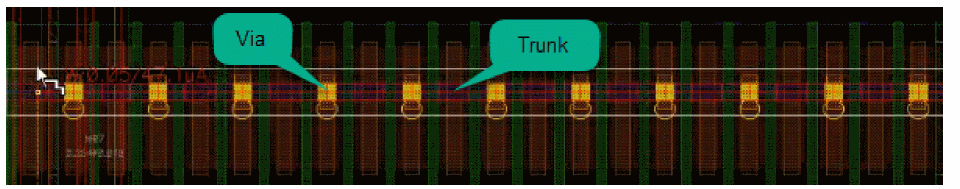
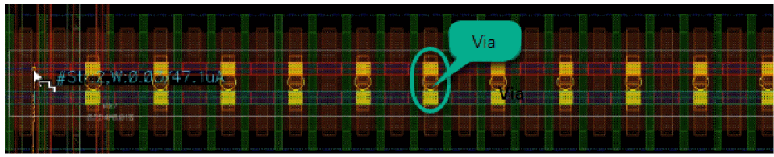
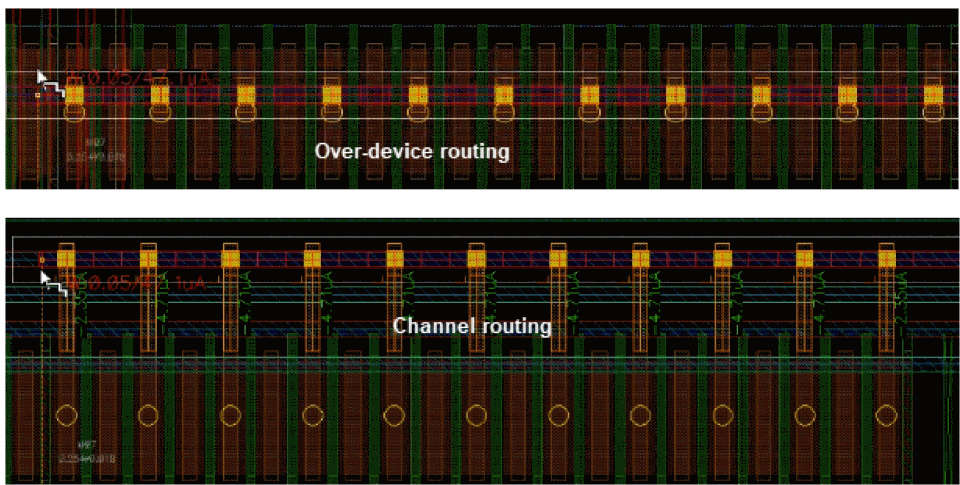
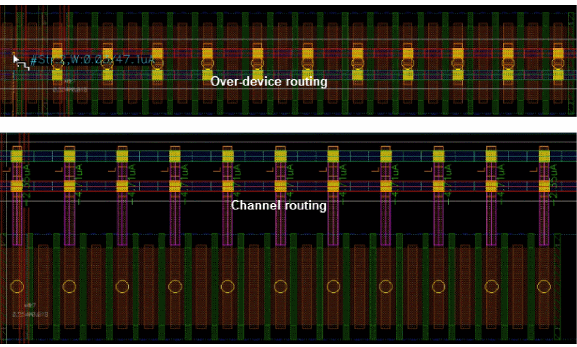

Routing Over Device
Simulation Driven Interactive Routing is designed to work in channel routing style. In the mature node, channel routing is recommended because over-device routing creates parasitics that can lead to changes in device behavior.
However, with FinFET technology, the routing density is more important than other criteria. Devices (especially MOS) have a different structure than before and are less sensitive to over-device routes. Therefore, Simulation Driven Interactive Routing now supports over-device routing, which is automatically enabled when a trunk is over device pins.
To automatically route over devices:
- Choose Create – Wiring – Wire.
- Select a location in line with the instance to start creating a wire.
-
While creating a wire, route over the device. The trunk is automatically connected to the device pins by adding vias, as shown in the following figure.
If both sides of the channel are connected, the connections to the devices that are not overlapped are removed. In addition, the current from them is ignored.
Similarly, when you run the Create Stranded Wire command, the trunk is automatically connected to the device pins by adding vias.
 -
Hold the
Ctrl+Shiftkeys and move the mouse pointer to a different current position. The wire is automatically switched between the channel routing and the over-device routing.
The following figure displays the switch between channel routing and over-device routing when the Create Stranded Wire command is used.
The Cover Pin and the Snap to Pin Center options are ignored in WSP. Otherwise, the path completely obstructs the pin and create shapes in the wrong direction. In addition, ignoring Cover Pin helps in the current distribution.
Related Topics
Performing Interactive SDR Checks
Return to top